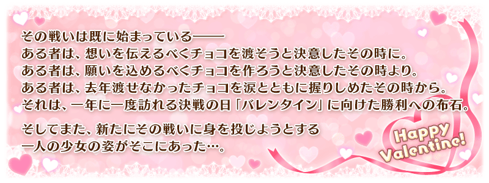

◆活動舉辦期間◆
2018年1月31日(三) 17:00～2月15日(四) 11:59
◆活動概要◆
舉辦期間限定活動「情人節2018 ～繁榮的巧克力花園 of 情人節～」！
今年Servant們似乎也著手情人節的禮物而在迦勒底內來回奔波。
Master的諸位也為了入手巧克力試著向Servant搭話吧！
挑戰活動關卡製造更多巧克力，入手活動専用道具「鎖定巧克力」，從中意的Servant收到情人節的禮物！
※可交付「鎖定巧克力」領取情人節禮物Servant，只限有召喚過履歴的Servant。
◆活動參加條件◆
只限通過「特異點F 炎上汙染都市 冬木」的Master才能參加
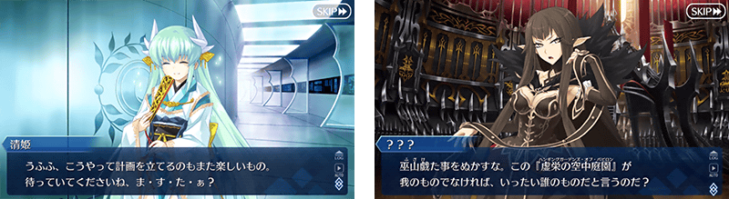
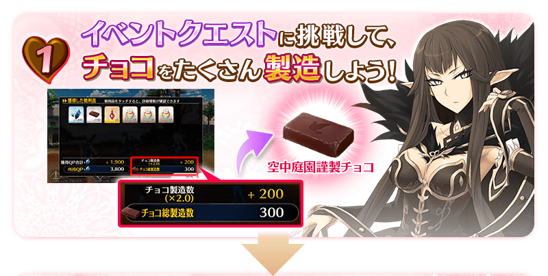
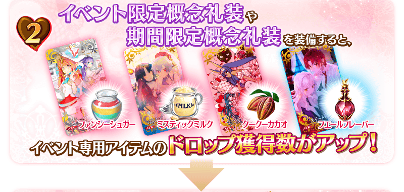
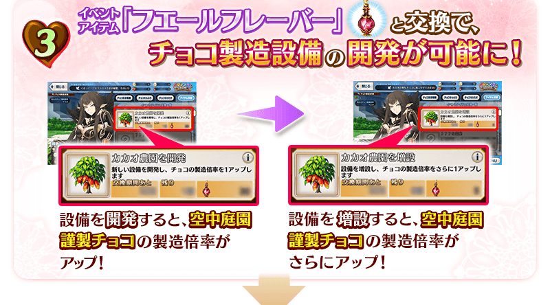
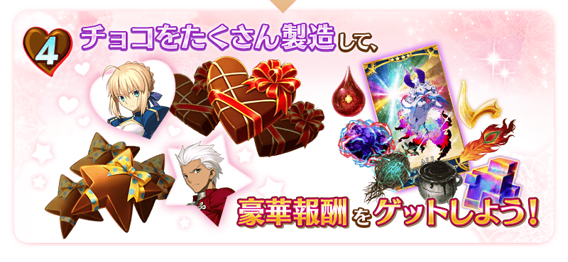
能享受故事的主線關卡，在巧克力的製造數到達一定數，會進行新設備的開發。
另外，通過主線關卡的序幕的話，會開放可收集活動道具的自由關卡。
開放的自由關卡之中，「巧克力製造 全職・白色級」「巧克力製造 全職・灰色級」「巧克力製造 全職・黑色級」，隨著一定期間經過，出現敵人會有所變化。
| 變更時間 | 對象自由關卡 | 出現的敵人職階 |
|---|---|---|
| 1月31日(三) 17:00～ 2月4日(日) 16:59 |
巧克力製造 全職・白色級 | Berserker |
| 巧克力製造 全職・灰色級 | Assassin | |
| 巧克力製造 全職・黑色級 | Lancer | |
| 2月4日(日) 17:00～ 2月8日(四) 16:59 |
巧克力製造 全職・白色級 | Caster |
| 巧克力製造 全職・灰色級 | Archer | |
| 巧克力製造 全職・黑色級 | Berserker | |
| 2月8日(四) 17:00～ 2月15日(四) 11:59 |
巧克力製造 全職・白色級 | Saber |
| 巧克力製造 全職・灰色級 | Berserker | |
| 巧克力製造 全職・黑色級 | Rider |
巧克力的製造數到達一定數的話，根據製造數可獲得達成報酬。
達成報酬可於「巧克力製造報酬」確認。
※巧克力的製造數是計算於活動關卡掉落的巧克力獲得。
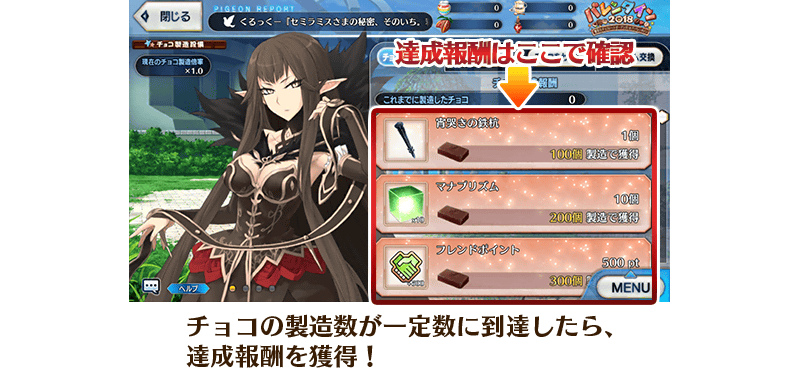
在「道具交換」可開發・增設使巧克力製造數增加的設備。
充實設備的話，會提升通過活動關卡時的巧克力製造數。
滿足設備的開發條件，不斷開發・增設設備讓巧克力的製造倍率提升吧！
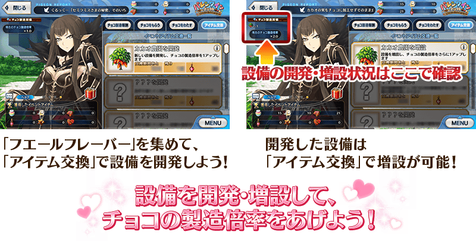
在「活動道具交換畫面」上方會顯示飛鴿報告。
飛鴿報告是賽米拉米斯放出的鴿子們所收集的各種新聞，會一併顯示設備的開發狀況。
※請注意進行新設備開發的話，不會顯示前面階段的報告，無法觀看。
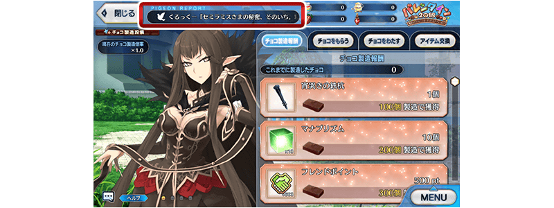
 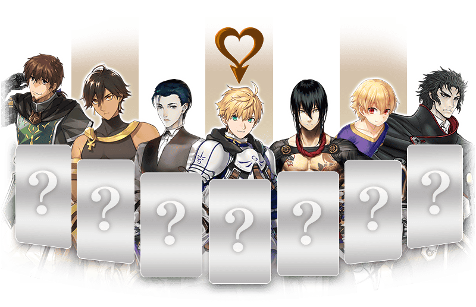
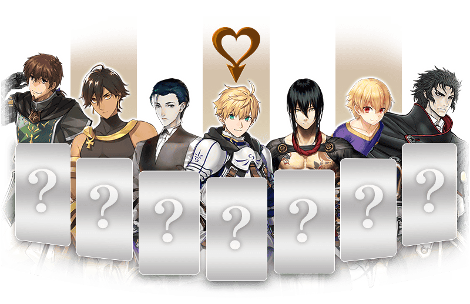
「鎖定巧克力」與「驚喜巧克力」可在「活動道具交換畫面」的「巧克力製造報酬」，做為製造數的達成報酬獲得。
◆交換方法◆
交換期間:2018年1月31日(三) 17:00～2月21日(三) 11:59
※交換期間結束後「鎖定巧克力」「驚喜巧克力」會消失。
◆鎖定巧克力的交付方◆
選擇「收到巧克力」或「交付巧克力」，選擇中意Servant準備的情人節禮物吧！
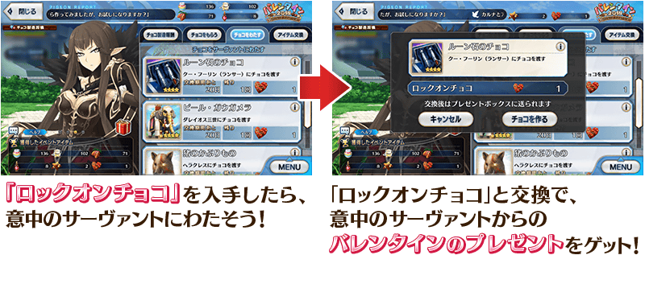
※從賽米拉米斯領取情人節禮物的條件為通過本活動的主線關卡。
※可交付「鎖定巧克力」領取情人節禮物的Servant，只限有召喚過履歴的Servant。
請注意沒有召喚過履歴Servant為對象外。
◆驚喜巧克力的交付方◆
入手「驚喜巧克力」選擇「收到巧克力」或「交付巧克力」，在這之中試著選擇「從誰收到巧克力」、「交付巧克力給誰」吧！
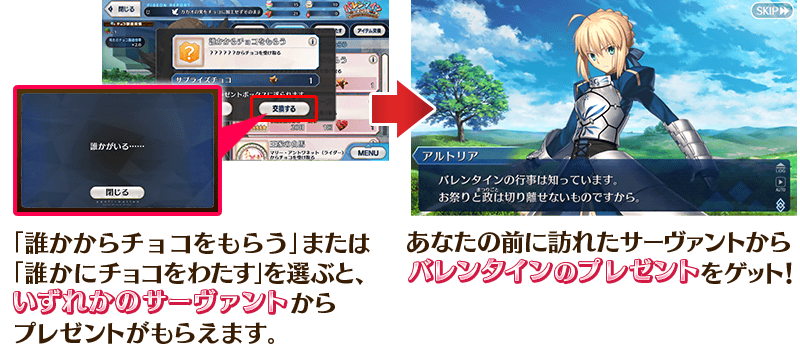
※「驚喜巧克力」的對象Servant只限有召喚過履歴於「收到巧克力」或「交付巧克力」做為「鎖定巧克力」交換對象開放的Servant。
請注意召喚沒有召喚過履歴Servant為對象外。
※持有在2016年及2017年舉辦的情人節活動來自Servant禮物的話，無法入手來自同樣Servant的新禮物。
持有2016年及2017年禮物的話，將持有禮物販賣或做為強化用素材來使用的話才能入手新的。
※交付「鎖定巧克力」與「驚喜巧克力」交換入手的情人節禮物沒有差異。
※「鎖定巧克力」及「驚喜巧克力」在活動舉辦期間結束後能交換成QP。
◆超值攻略方法・其1◆初登場Servant「賽米拉米斯」在期間限定活動「情人節2018 ～繁榮的巧克力花園 of 情人節～」的活動關卡中的攻擊威力提升！

◆超值攻略方法・其2◆ 裝備可在「道具交換」入手的活動限定概念禮裝「★5(SSR)スイート・デイズ」的話，會提升設備開發・增設用活動道具「增殖香料」的掉落獲得數！
【活動限定概念禮裝】
| 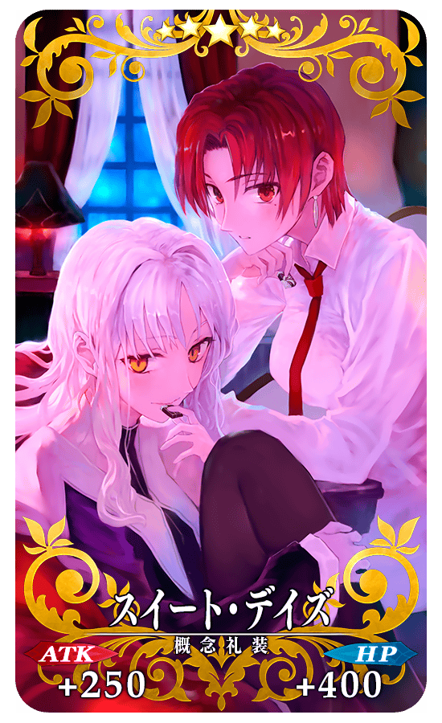 |
★★★★★SSR |
另外，裝備從Servant收到的「情人節禮物」概念禮裝的話，會提升設備開發・增設用活動道具「增殖香料」的掉落獲得數1個！
【情人節禮物】
◆超值攻略方法・其3◆ 裝備於聖晶石召喚Pick Up中的期間限定概念禮裝的話，會提升活動専用道具「庫庫可可」「神祕牛奶」「奇幻砂糖」的掉落獲得數！
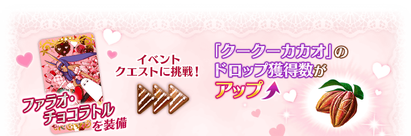 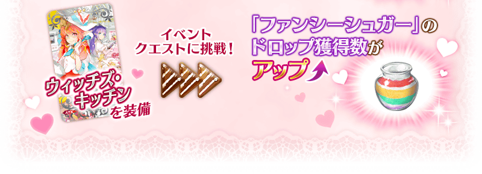
◆交換方法◆
交換期間:2018年1月31日(三) 17:00～2月21日(三) 11:59
【2月14日(三) 15:00追記】
就如在「關於現在確認到的問題」公告所刊載，由於在活動道具交換一覧顯示的交換期限，並非道具交換期限的剩餘天數，顯示成活動結束期限的剩餘天數的問題，在遊戲內的活動報酬畫面顯示的活動道具交換期間日期有誤。
正確為2月21日(三) 11:59，關於在遊戲內的記述，會在活動結束期限後切換成正確的交換期間。
抱歉給玩家帶來麻煩。
※交換期間結束後「增殖香料」「庫庫可可」「神祕牛奶」「奇幻砂糖」會消失。
活動専用道具可自點擊管理室(ターミナル)畫面右上「活動報酬」的「活動道具交換」畫面，交換以下的道具。
◆能用庫庫可可交換的道具◆
| 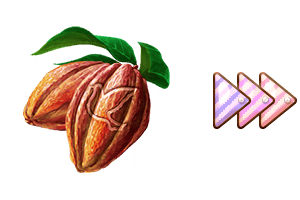 |
【活動限定概念禮裝】 【技能強化＆靈基再臨素材】 【其他道具】 |
◆能用神祕牛奶交換的道具◆
|
【活動限定概念禮裝】 【技能強化＆靈基再臨素材】 【其他道具】 |
◆能用奇幻砂糖交換的道具◆
|
【活動限定概念禮裝】 【技能強化＆靈基再臨素材】 【其他道具】 |
◆能用增殖香料、鎖定巧克力、驚喜巧克力交換的道具◆
| 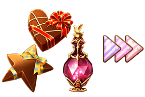 |
【其他道具】 |
以通過「情人節2018 ～繁榮的巧克力花園 of 情人節～」的主線關卡及「終局特異點」的Master為對象開放高難易度的「挑戰關卡」。
挑戰關卡就算在通過後也不會消失，能無數次挑戰，可以變更Servant和概念禮裝的組合後再次挑戰。
※關卡通過報酬、戰利品、Master經驗值、魔術禮裝經驗值、絆點數只限在初次通過時獲得。
◆挑戰關卡參加條件◆
只限通過「情人節2018 ～繁榮的巧克力花園 of 情人節～」的主線關卡及「終局特異點」的Master才能參加
◆挑戰關卡初次通過報酬◆
傳承結晶 1個
【1月31日(三) 17:00追記】
戰鬥中，在敵人的攻擊時，因敵人Critical發生率下降的效果影響，在Critical攻擊失敗時顯示「CRITICALMISS」。
※只有顯示的變更，Critical發生率下降的效果內容自身並無變更。
關於初登場Servant「賽米拉米斯」和對活動攻略有利的期間限定概念禮裝做為召喚對象的「情人節2018Pick Up召喚(每日交替)」，詳情請自下述橫幅確認。